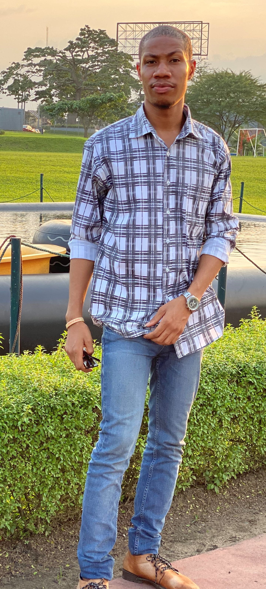

Take your Business
Online
FIND OUT HOW
Get to Know Me
A little bit About Myself
My name is Joseph Ajemba. I hail from Eastern part of Nigeria. I am a graduate of Usman Danfodiyo University Sokoto with a Second Class Upper Bachelor degrees in Agriculture. I am a front-end developer, with mid-knowledge on html and css also en-route to studying Javascript. I design Responsive websites
I also have a litle expertise in managing and maintaining websites and running debugs on mobile front-end as well. Me and my team can help improve your marketing and online presence.
I am also a interning in the current ungoing HNGI8 Training, where i am learning to improve my knowledge on front-end on web development and i hope to improve my skills so i can advance my level of front-end web knowledge

Here is What I Have to Offer
Awesome Modern Web Designs
Modern Layout and Designs
Responsive Website Design
Browser Compatibility
Latest Web Tools